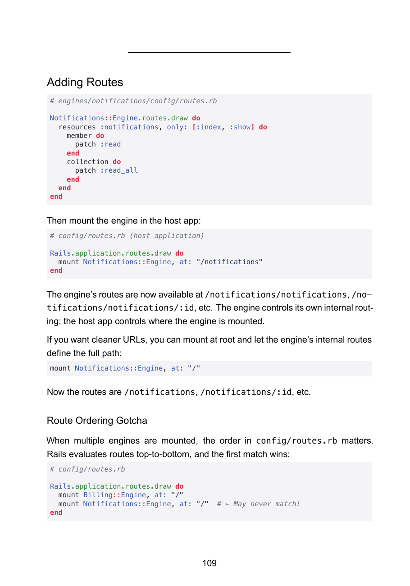

This year, how many of you
wrote auth from scratch?
Again?
The boilerplate tax
Auth.Billing.Teams.Notifications.
Weeks — before you've shipped a single thing that's actually yours.

2am. Trim 6×9. The margins fight back. A diagram straddles a page break. I wrote a book — then spent three weeks trying to print it.
So I built a tool to finish my own book
Quire
Markdown chapters → a print-ready book.
Every File
Is Yours
The modular monolith, in your repo — boilerplate gone, boundaries enforced, you still the architect
David Silva · 15+ yrs Ruby · @davidslv
What the book is about
Clean Architecture→
The Hard Parts→
XP→
Rails Engines
The first comprehensive Rails architecture book since Crafting Rails, 2011. The map.
The turn — same problem, two places
The bookchapters · modules · boundaries
the same boundary problem
The app I was buildingauth · billing · teams · …
"A change to billing could quietly break notifications — and nobody would notice until a customer did."
Modular Rails — Foreword
The modular monolith.
Microservice benefits, monolith bill.
clear boundaries · independent testing · team autonomy — one process · no HTTP · no distributed-systems tax
The mechanism: Rails Engines
One monolith · one process
authbillingteamsnotificationsaccountscore
Boundaries inside one process. Native Rails — not a new layer.
The book is the artefact.
The code is the evidence.
github.com/Davidslv/seams
Seams
A CLI that generates modular Rails engines — into your repo.
Every file is yours to edit.
Nothing is hidden behind the gem.
It's just Rails — latest stable, your conventions. The gem is the generator; it walks away. No new framework. Nothing in your hot path.
Watch what the next
45 seconds replaces.
Demo · bin/seams
generate → it's just Rails → the cop says no → the event graph · click to pause / replay
What's actually real
- 4 RuboCop boundary cops
- GDPR-encrypted PII (Auth)
- 13-handler Stripe webhook router
- STI notification strategies
- Synchronous events, explicit subscribers
- Generated specs, green
Seams takes away the boilerplate — not the keyboard.
The exemptions are where you judge me
def on_const(node)
return if same_engine?(node)
return if current_attributes?(node) # Auth::Current is shared, by design
return unless defined?(Teams::Team) # Teams is optional — don't false-flag
add_offense(node, message: cross_engine_msg(node))
end
A cop with no exemptions is naive. These are where the real thinking lives.
I know what you're about to ask
Packwerk?Checks packages you already drew. Seams generates the engines and the cops — in the RuboCop you already run.
rails plugin new?Same engines — but empty. Seams' come pre-wired: events, registry, boundary cops, tests.
Bullet Train / Jumpstart?Their code lives behind a gem. Yours lives in your repo. The substrate, not a starter kit.
Microservices?One process. No HTTP. Synchronous events with explicit subscribers — none of the distributed bill.
The honest limits
Beta. Waves 1–9. Events are synchronous ActiveSupport::Notifications — subscribers enqueue jobs, they don't do network work inline. One process.
Need true service isolation? This isn't that — and that's the point.
I needed to prove it builds real things.
So I built a real thing.
The dogfood — a directory listing, not a claim
$ ls quire-saas/engines/
accounts auth billing core notifications teams
quire_rails ← the one adapter that makes it Quire
6 canonical engines + 1 thin adapter. 60+ system tests. Beta-ready. You don't need all seven.
What it is
6 engines + quire_railsauthbillingteams…
→
Quire SaaS
A hosted UK self-publishing platform — PLR, ALCS, Nielsen ISBNs, HMRC guidance.
The loop closes
Book→
Quire CLI→
Seams→
Quire SaaS↺
publishes books
In 2026 there's a lot of talk of tools
that replace the developer.
This is the opposite bet.
Seams doesn't write your code or hide it. It clears the boilerplate tax so your energy goes where only you can — where your boundaries are.
Leverage that keeps you the architect.
"I couldn't find the book I wanted, so I wrote it.
I couldn't find the tool, so I built it."
David Silva
Do this Monday
Pick the one engine you're dreading writing next — auth, billing, whatever. Let Seams hand it to you, in your repo, this week.
You don't need all seven.
Every file is yours
Read
Modular Rails
the thinking behind the boundaries
Try
gem "seams"
bin/seams <engine> — in your repo
Build
Extract one seam
this week. you don't need all seven.
davidslv.uk/modular-rails · github.com/Davidslv/seams · @davidslv
Go find the one you wish existed. Thank you.